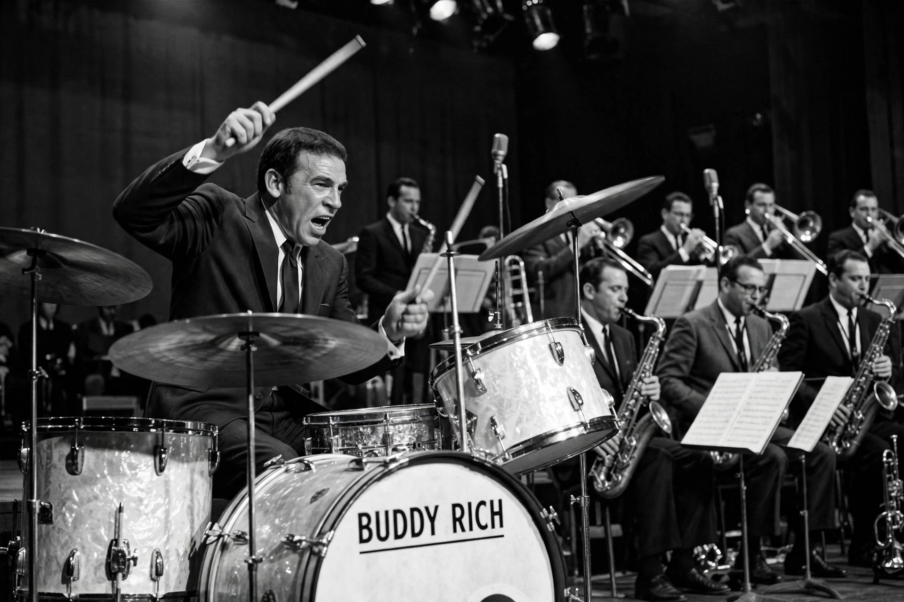

 Rich performing in the 1970s | |
| Birth name | Bernard Rich |
|---|---|
| Born | September 30, 1917 Brooklyn, New York City, U.S. |
| Died | April 2, 1987 (aged 69) Los Angeles, California, U.S. |
| Genres | Jazz, big band, swing |
| Instruments | Drums, vocals |
| Years active | 1921–1987 |
| Associated acts | Tommy Dorsey, Harry James, Artie Shaw, Frank Sinatra |
Bernard "Buddy" Rich (September 30, 1917 – April 2, 1987) was an American jazz drummer and bandleader, widely regarded as one of the most influential drummers of all time. Renowned for his virtuoso technique, power, speed, and precision — particularly his single-stroke rolls and one-handed playing — he performed from early childhood and led his own big bands for decades.
Rich was born in Brooklyn, New York, to vaudeville performers. A child prodigy, he was drumming on stage by 18 months of age and, billed as "Traps the Drum Wonder," was one of the highest-paid child entertainers in the world by age four. He claimed never to have taken a drum lesson or practised, attributing his ability to natural gifts; he also tap-danced and sang in vaudeville.
Rich entered jazz in 1937 and played with Joe Marsala, Bunny Berigan, Artie Shaw, and Tommy Dorsey, whose band he anchored from 1939, backing Frank Sinatra — with whom he had a famously stormy relationship. He later played with Benny Carter, Harry James, Les Brown, Charlie Parker, and Oscar Peterson, and recorded celebrated drum battles with Gene Krupa and Max Roach.
From 1966 until his death, Rich led his own big band, which became one of the last great touring big bands, famed for arrangements such as the "West Side Story" suite and "Channel One Suite." He was a frequent guest on The Tonight Show Starring Johnny Carson and other television programs, bringing big-band jazz to mass audiences. His explosive temper and perfectionism with sidemen were as legendary as his playing; secretly recorded dressing-room tirades later achieved cult fame.
Rich died on April 2, 1987, in Los Angeles, following surgery for a brain tumour. He is consistently ranked among the greatest drummers in history; generations of drummers, from rock to fusion, cite him as a formative influence.